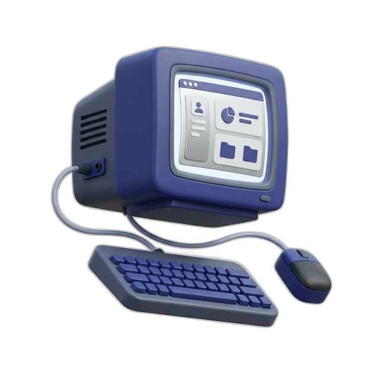
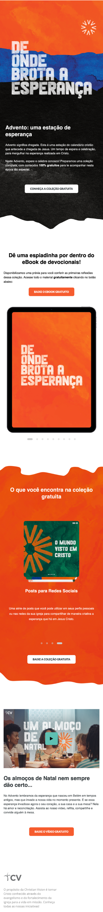
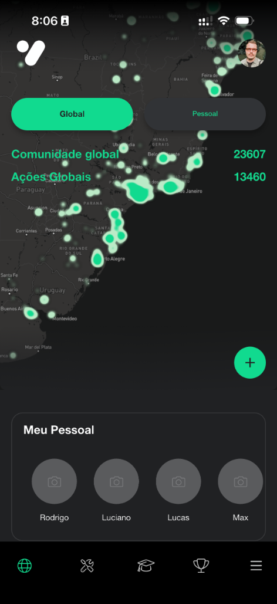
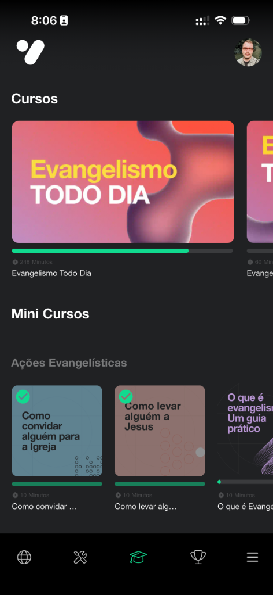

UX DESIGNER • SERVICE DESIGNER • ESTRATÉGIA DE PRODUTO
Soluções técnicas que humanizam experiências digitais.
Traduzindo problemas complexos em experiências e jornadas digitais fluidas e escaláveis.

— QUEM SOU
Construindo fluxos que unem eficiência e empatia
Designer e pós-graduando em UX Design pelo SENAC Brasil, focado em arquitetar soluções técnicas e otimizar jornadas de usuário. Minha experiência transita entre Produto, Engenharia e Sucesso do Cliente.
Utilizo a lógica de Operações e o repertório das Ciências Humanas para aplicar dados e IA em estratégias que garantem a usabilidade de produtos digitais complexos — do primeiro toque até a fidelização.
Atualmente como Technical Product Specialist na Christian Vision, atuo como elo entre stakeholders e engenharia, traduzindo necessidades complexas em User Stories, fluxogramas e documentação funcional centrada no usuário.
— PROJETO 1
Service Blueprint: CV Outreach
O CV Outreach utiliza inteligência geográfica e campanhas digitais para conectar pessoas com dúvidas sobre a fé cristã diretamente a igrejas parceiras na sua região, através de LPs evangelísticas. O desafio central foi estruturar como a equipe de parcerias atraía, engajava e treinava essas igrejas (o cliente B2B da jornada).
Abaixo apresento o Service Blueprint interativo que redesenhei. O fluxo mapeia desde a Descoberta (Awareness) até o Relacionamento, sincronizando as interações do parceiro com as automações do sistema (HubSpot CRM) e os touchpoints humanos da equipe.
O Problema
A jornada B2B operava de forma fragmentada, gerando fricção no onboarding de parceiros. O desafio central era desenhar um ecossistema escalável de engajamento que automatizasse tarefas repetitivas, sem perder a personalização e os pontos de contato vitais da equipe.
A Solução
Mapeamento end-to-end da experiência através de um Service Blueprint. Ao estruturar os fluxos (frontstage e backstage) no HubSpot CRM, os gargalos operacionais foram eliminados, criando uma jornada híbrida estruturada e garantindo interações automatizadas no momento certo da curva de ativação do parceiro.
— PROJETO 2
Landing Pages Responsivas para Campanhas
A CV desenvolve material evangelístico gratuito para igrejas utilizarem no evangelismo digital. As campanhas giram em torno de 3 assets principais: Vídeo evangelístico, eBook com reflexões e um Pacote de posts para redes sociais.
Tudo isso era compilado em coleções sazonais (como Natal e Páscoa). Para isso, criávamos landing pages para divulgar e facilitar o acesso a esses assets. Simplesmente preenchendo um formulário, o usuário acessava diretamente o material para download via funil MRSS.
O Problema
A antiga plataforma de hospedagem de recursos exigia um fluxo de login de alto esforço cognitivo, o que resultava em altas taxas de abandono. Além disso, a falta de storytelling visual desvalorizava o conteúdo, impactando negativamente as métricas de conversão.
A Solução
Desenho de Landing Pages progressivas focadas em usabilidade e redução de atrito (frictionless design). As barreiras técnicas foram substituídas por jornadas narrativas, guiando o usuário de forma fluida para a conversão imediata (download via formulário direto), melhorando a acessibilidade ao material final.
Acesse por um computador para visualizar o Layout Desktop e os Wireframes estruturais.




— PROJETO 3
Workflows de Engajamento no HubSpot
Neste projeto, explorei fluxos de automação construídos dentro do HubSpot para dar suporte operacional às campanhas de landing pages focadas em download de assets evangelísticos (Projeto 2).
Ao conectar dados comportamentais (downloads) a fluxos de comunicação direcionada por e-mail e WhatsApp, o objetivo foi criar uma jornada contínua e aumentar expressivamente a adesão a novos materiais.
O Problema
A análise de dados indicou uma alta taxa de abandono na jornada pós-conversão: os usuários adquiriam apenas um infoproduto e não retornavam. Isso desperdiçava o ecossistema educacional completo da campanha e gerava um baixo Lifetime Value (LTV) de aquisição.
A Solução
Pesquisa e implementação de uma arquitetura de automação comportamental. Foram desenhadas lógicas condicionais no HubSpot que avaliam o último consumo do usuário para disparar réguas de relacionamento altamente contextualizadas. O impacto gerou a promoção orgânica do engajamento contínuo e a elevação da retenção.
— PROJETO 4
Auditoria Heurística de UX: App yesHEis
O yesHEis é um aplicativo global da CV voltado ao evangelismo e ao discipulado prático, oferecendo vídeos, minicursos, desafios e uma comunidade ativa. Seu objetivo é ajudar cristãos a ganharem confiança para compartilhar sua fé no cotidiano.
Neste estudo de caso, realizei uma Avaliação Heurística de UX focada na Aba de Cursos do aplicativo, utilizando como parâmetro as 10 Heurísticas de Nielsen (avaliação de especialista). O objetivo foi mapear atritos que impedem os usuários de manterem um ritmo consistente de aprendizado e transformação de intenção em prática.

Acessibilidade
Gravidade 2 (Menor)Violação: Telas internas usam imagem com texto
embutido.
Heurística 5
Solução: Desenvolver os quadros em componentes HTML e SVG reais para perfeita leitura de tela.
Descoberta e Filtros
Gravidade 3 (Maior)Violação: Lista ampla de cursos sem opções de filtragem, ordenação
ou busca por palavra-chave.
Heurística
6
Solução: Implementar filtros verticais, ordenação por novidade e barra de busca direta.
Navegação nos Cursos
Gravidade 2 (Menor)Violação: Estilo stories que permite apenas avançar.
Heurística 3
Solução: Permitir clique à esquerda para retroceder e adicionar botões persistentes de voltar.
Ajuda e Docs
Gravidade 3 (Maior)Violação: Dúvidas como progressos e certificados sem
resposta.
Heurística 10
Solução: Criar um bloco expansível ou Modal "Como funcionam os cursos?" no topo da grade.
Sugestão: "Continue de onde parou"
Iniciativa de ProdutoIncluir um bloco persistente "Continuar Aprendendo" no topo da área da Aba Cursos, contendo o último treinamento acessado com a porcentagem de progresso visual de forma eficiente.

O Maior Desafio
Identificou-se que a ausência de modelos mentais de continuidade ('continue de onde parou') e de filtragem eficiente estava sobrecarregando severamente a carga cognitiva do usuário (Heurísticas de Reconhecimento e Eficiência de Nielsen). Essa fricção na retomada dos estudos comprometia diretamente as métricas de retenção funcional (DAU/MAU) da aba.